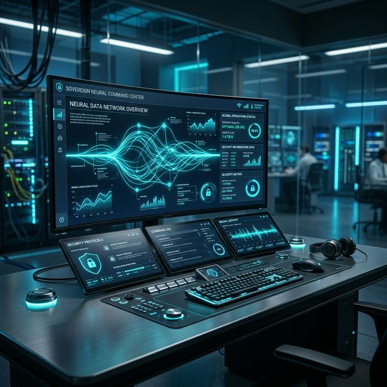

On-premise Sovereign AI
Non-negotiable
Security
The central nervous system for organizations where data sovereignty is absolute. Own your intelligence, secure your future, and eliminate vendor lock-in.

Core Value Pillars
Absolute Sovereignty by Design
Network Isolated
Engineered to function in total air-gap environments with zero connection to the public internet. Absolute privacy for your most sensitive operations.
Multi-Model Gateway
Eliminate vendor lock-in. Toggle between public APIs and private local LLMs instantly via a secure configuration dashboard.
Sovereign RAG System
An autonomous knowledge factory that transforms fragmented data into high-fidelity intelligence via secure, citation-backed Agentic RAG.
Technical Architecture
The Five-Layer Sovereign Stack
Presentation Layer
Unified Command Center for human-AI collaboration. Featuring Open WebUI, LibreChat, and native IDE Plugins for seamless dev-to-production workflows.
Governance Layer
Deterministic security using Policy-as-Code (OPA) and Immutable Identity-Aware Auditing. Non-negotiable data sovereignty and compliance enforcement.
Orchestration Layer
Cognitive "nervous system" managing Agentic Reasoning and Industrial AIoT Bridging—integrating real-time telemetry into decision loops.
Data Layer
Sovereign knowledge base with Air-Gapped RAG, secure Vector Stores, and a private object repository with semantic consistency checking.
Infrastructure Layer
Self-hosted hardware-agnostic foundation. Optimized for NVIDIA TensorRT / Apple MLX for server-grade inference on Edge and Air-Gap nodes.
Strategic Use Cases
Engineered for the High-Trust Enterprise
Gov & Public Sector
Automated zoning, legislative analysis, and public record synthesis with pixel-perfect citations.
Healthcare Systems
De-identified clinical inference and administrative automation without PHI ever leaving your network.
Physical AI & Industrial
Cognitive layers for physical assets, edge robotics, and real-time analytics in resource sectors.
Leadership Team
The Minds Behind OmniNStack
June Hong
Chief of Technology Officer, Co-founder
A seasoned Software Architect and Technical Leader with over 20 years of experience spanning embedded systems, cloud-native platforms, and AI-driven cyber-physical systems. June leads the technical vision for OmniNStack, drawing on a track record of architecting mission-critical systems for global technology leaders such as Samsung, NTT, and NEC. His work focuses on bridging advanced software orchestration with Edge and Physical AI, enabling Large Language Models (LLMs) to function as cognitive layers for physical assets.
Hyunseung Lee
Principal Software Engineer & AI Scientist, Co-founder
A cross-disciplinary engineer specializing in the integration of advanced software orchestration with next-generation Physical AI hardware. Hyunseung specializes in building production-grade On-premise Sovereign AI stacks using LangGraph, Retrieval-Augmented Generation (RAG), and LangChain—positioning OmniNStack as a robust, infrastructure-agnostic operating system for high-trust enterprise environments.
Joseph S. Yu
Ph.D., Principal Hardware Engineer & Physical AI Architect, Co-founder
An AI Architect with strategic expertise across the South Korea–North America technology corridor. Joseph plays a key role in positioning OmniNStack as a gateway in the On-premise Sovereign AI landscape, leveraging deep insight into regional innovation ecosystems to drive cross-border collaboration, technology alignment, and market expansion.
Intelligence is most powerful when it is owned.
OmniNStack is the Platform of Last Resort for data security—a sanctuary where organizational autonomy is guaranteed.
Contact Our Solutions Architects